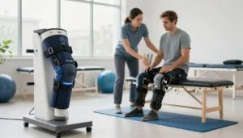

Kinetek uređaji za oporavak koljena - prednosti
Kinetek tehnologija promijenila je svijet rehabilitacije. Naš tim objasnit će vam kako ovi uređaji funkcioniraju.
Koristimo Kinetek uređaje za kvalitetniju rehabilitaciju. Oni pomažu da se vaše koljeno brže i bolje oporavi.
Naš cilj je pomoći vam da što prije vratite zdravlje koljena. Kinetek uređaji čine rehabilitaciju jednostavnijom i dostupnijom.
Ključni zaključci
- Kinetek tehnologija poboljšava rehabilitaciju koljena.
- Uređaji su osmišljeni za brži oporavak.
- Pomažu u vraćanju pokretljivosti i snage koljena.
- Rehabilitacija postaje lakša i dostupnija.
- Kinetek uređaji su inovativno rješenje za oporavak koljena.
Što su Kinetek uređaji za rehabilitaciju koljena?
Kinetek uređaji predstavljaju revolucionaran pristup rehabilitaciji koljena. Riječ je o specijaliziranim uređajima osmišljenim za pomoć u obnavljanju funkcije koljena nakon ozljeda ili operacija.
Povijest razvoja Kinetek tehnologije
Kinetek tehnologija ima bogatu povijest. Njezin razvoj započeo je s ciljem poboljšanja procesa rehabilitacije.
Početak primjene u fizikalnoj medicini
Prvi koraci u primjeni Kinetek tehnologije bili su usmjereni prema fizikalnoj medicini. Kinetek uređaji pokazali su iznimnu učinkovitost u ranoj fazi rehabilitacije.
Evolucija kroz godine
Tijekom godina Kinetek tehnologija je evoluirala. Postala je sve sofisticiranija i učinkovitija u rehabilitaciji koljena. Kontinuirani razvoj omogućio je stvaranje uređaja koji se prilagođavaju individualnim potrebama pacijenata.
Osnovni principi rada Kinetek uređaja
Osnovni princip rada Kinetek uređaja temelji se na kontinuiranom pasivnom pokretu. Ovaj princip omogućuje ubrzani oporavak i smanjenje boli.
Uređaji su osmišljeni tako da omoguće preciznu kontrolu nad pokretima. To je ključno za učinkovitu rehabilitaciju.
Kako funkcioniraju Kinetek uređaji?
Kinetek uređaji koriste princip kontinuiranog pasivnog pokreta. To znači da se koljeno može kretati bez aktivnog sudjelovanja pacijenta. Ova tehnologija omogućuje nježan i kontroliran pokret.
Tehnologija kontinuiranog pasivnog pokreta
Kontinuirani pasivni pokret osnova je Kinetek uređaja. Omogućuje koljenu kretanje kroz određeni raspon bez aktivnog sudjelovanja pacijenta. Time se smanjuje bol i otok te ubrzava oporavak.
Stručnjaci ističu da je to ključno za rehabilitaciju koljena jer održava zglob pokretljivim i sprječava stvaranje ožiljnog tkiva.
Senzori i prilagodba individualnim potrebama
Kinetek uređaji imaju napredne senzore koji prate napredak pacijenta i prilagođavaju terapiju. To je važno za svakog pacijenta.
Praćenje napretka pacijenta
Senzori u Kinetek uređajima kontinuirano prate napredak pacijenata. Fizioterapeuti mogu pratiti poboljšanja i prema tome prilagođavati terapiju.
Automatska prilagodba parametara
Na temelju podataka sa senzora, Kinetek uređaji automatski prilagođavaju terapiju. Time se osigurava optimalna rehabilitacija.
Vrste ozljeda koljena koje se mogu liječiti Kinetek uređajima
Kinetek uređaji osmišljeni su za liječenje širokog spektra ozljeda koljena. Posebno su učinkoviti u postoperativnoj rehabilitaciji, a korisni su i za liječenje ozljeda ligamenata i meniskusa.
Postoperativna rehabilitacija
Postoperativna rehabilitacija ključna je nakon kirurških zahvata na koljenu. Kinetek uređaji nude kontinuirani pasivni pokret koji pomaže u obnavljanju funkcije koljena.
Nakon rekonstrukcije ACL-a
Nakon rekonstrukcije prednjeg križnog ligamenta (ACL) Kinetek uređaji pomažu u poboljšanju stabilnosti i pokretljivosti koljena, a više o tome pročitajte u članku o trajanju rehabilitacije nakon rekonstrukcije ACL ligamenata.
Nakon ugradnje endoproteze koljena
Ugradnja endoproteze koljena zahtijeva pažljivu rehabilitaciju. Kinetek uređaji podržavaju oporavak kroz kontrolirani pokret.
Ozljede ligamenata
Ozljede ligamenata, uključujući ACL i PCL, česte su sportske ozljede. Kinetek uređaji koriste se za rehabilitaciju i jačanje ligamenata.
Ozljede meniskusa
Ozljede meniskusa još su jedna česta ozljeda koljena. Kinetek terapija pomaže u obnavljanju funkcije koljena nakon takvih ozljeda.
Kinetek uređaji učinkovito su rješenje za različite vrste ozljeda koljena. Pružaju personaliziranu rehabilitaciju i brži oporavak.
Kinetek oporavak koljena prednosti
Kinetek uređaji za oporavak koljena nude brojne prednosti koje značajno poboljšavaju proces rehabilitacije. To čini Kinetek tehnologiju ključnim alatom u liječenju ozljeda koljena.
Ubrzavanje procesa oporavka
Kinetek uređaji ubrzavaju oporavak. Kontinuirani pasivni pokret pomaže bržem vraćanju funkcije koljena. Ubrzani oporavak omogućuje pacijentima da ranije počnu s aktivnijom rehabilitacijom.
Smanjenje boli i oteklina
Kinetek uređaji smanjuju bol i otekline. Kontinuirani pokret poboljšava cirkulaciju i smanjuje upalu. To rezultira manjom boli i bržim oporavkom.
Poboljšanje opsega pokreta
Kinetek terapija poboljšava opseg pokreta. Redovita uporaba pomaže u povećanju fleksibilnosti i pokretljivosti koljena.
Mjerljivi rezultati napretka
Terapija Kinetek uređajima omogućuje mjerljive rezultate napretka. Pacijenti i terapeuti mogu pratiti poboljšanja, što dodatno motivira napredak u rehabilitaciji.
Dugoročni učinci na mobilnost
Dugoročni učinci Kinetek terapije na mobilnost su pozitivni. Pacijenti postižu bolju i trajniju obnovu funkcije koljena, što omogućuje povratak svakodnevnim i sportskim aktivnostima.
Usporedba s tradicionalnim metodama rehabilitacije
Kinetek uređaji predstavljaju veliki napredak u rehabilitaciji koljena. Koriste automatizirani pristup koji je precizan i dosljedan. To je teško postići manualnom terapijom.
Kinetek nasuprot manualnoj terapiji
Manualna terapija temelji se na vještini terapeuta, što može dovesti do varijabilnosti u tretmanu. Kinetek uređaji, s druge strane, nude standardiziran tretman koji se može prilagoditi potrebama pacijenta.
Prednosti automatiziranog pristupa
Automatizirani pristup Kinetek uređaja ima brojne prednosti:
- Dosljednost terapije: terapija ne ovisi o ljudskom čimbeniku.
- Preciznost pokreta: uređaji omogućuju precizne pokrete ključne za učinkovitu rehabilitaciju.
Dosljednost terapije
Dosljednost je ključna za uspješan oporavak. Kinetek uređaji osiguravaju da se terapija provodi prema postavljenim parametrima. To osigurava optimalan tretman bez varijabilnosti.
Preciznost pokreta
Preciznost pokreta Kinetek uređaja je neusporediva. Ova preciznost posebno je važna u ranoj fazi oporavka, kada su pokreti ograničeni i bolni.
Kinetek uređaji nude značajne prednosti u rehabilitaciji koljena. Njihova sposobnost pružanja dosljedne i precizne terapije čini ih vrlo vrijednim alatom u procesu oporavka.
Faze oporavka koljena uz Kinetek uređaje
Oporavak koljena uz Kinetek uređaje odvija se u nekoliko faza. Kinetek tehnologija omogućuje personaliziran i učinkovit proces koji se prilagođava potrebama pacijenta u svakoj fazi.
Rana faza rehabilitacije
Rana faza rehabilitacije ključna je za uspješan oporavak. Počinje neposredno nakon operacije ili ozljede.
Prvi dani nakon operacije
U prvim danima fokus je na smanjenju boli i otekline. Kinetek uređaji koriste se za lagane pokrete koji pokreću koljeno bez stresa na zglob.
Početni parametri terapije
Početni parametri terapije prilagođavaju se individualnim potrebama pacijenta. To uključuje određivanje opsega pokreta i brzine.
Srednja faza rehabilitacije
Srednju fazu rehabilitacije obilježava intenziviranje vježbi. Opseg pokreta postupno se povećava, a pacijenti počinju osjećati poboljšanje pokretljivosti koljena.
U ovoj fazi Kinetek uređaji pomažu u jačanju mišića oko koljena i poboljšanju stabilnosti zgloba.
Kasna faza rehabilitacije
U kasnoj fazi pacijenti izvode složenije pokrete. Cilj je vratiti punu funkcionalnost koljena i pripremiti se za povratak uobičajenim aktivnostima.
Kroz sve ove faze Kinetek uređaji pružaju podršku i prilagodbu terapije prema potrebama pacijenta, osiguravajući optimalan oporavak koljena.
Protokoli korištenja Kinetek uređaja
Za postizanje najboljih rezultata važno je slijediti određene protokole za Kinetek terapiju. Protokoli uključuju određivanje optimalnog trajanja i učestalosti terapije te prilagodbu parametara tijekom oporavka.
Optimalno trajanje i učestalost terapije
Optimalno trajanje i učestalost terapije ovise o vrsti i težini ozljede koljena. Obično terapija traje između 15 i 30 minuta po sesiji. Preporučuje se korištenje nekoliko puta dnevno.
Prema istraživanjima, redovita uporaba Kinetek uređaja ubrzava oporavak. Jedno istraživanje pokazalo je da su pacijenti koji su koristili Kinetek terapiju imali do 30% brži oporavak.
Prilagodba parametara tijekom oporavka
Parametri Kinetek terapije prilagođavaju se tijekom oporavka kako bi se osigurala maksimalna učinkovitost. Prilagodba uključuje povećanje opsega pokreta i modifikaciju brzine i otpora.
Povećanje opsega pokreta
Povećanje opsega pokreta ključno je za rehabilitaciju. Kinetek uređaji omogućuju postupno povećanje pokreta, čime se pomaže u obnavljanju funkcije koljena.
Prilagodba brzine i otpora
Prilagodba brzine i otpora omogućuje personaliziranu terapiju. Povećanjem brzine i otpora pacijenti postižu veću snagu i fleksibilnost.
Znanstveni dokazi o učinkovitosti Kinetek uređaja
Učinkovitost Kinetek uređaja u rehabilitaciji koljena dokazana je kroz brojna klinička istraživanja. Ova istraživanja pomogla su razumjeti kako Kinetek tehnologija pomaže pacijentima.
Klinička istraživanja
Klinička istraživanja provedena su kako bi se ocijenila učinkovitost Kinetek uređaja. Studije su obuhvaćale različite kliničke scenarije, uključujući istraživanja na sportašima i općoj populaciji.
Studije na sportašima
Studije na sportašima pokazale su da Kinetek uređaji ubrzavaju oporavak nakon ozljeda koljena. To je posebno važno za one koji se žele brzo vratiti sportskim aktivnostima.
Studije na općoj populaciji
Istraživanja na općoj populaciji također su pokazala pozitivne rezultate. Kinetek uređaji korisni su za širok spektar osoba s ozljedama koljena.
Statistički podaci o uspješnosti
Statistički podaci iz istraživanja pokazuju visoku stopu uspješnosti Kinetek terapije.
Znanstveni dokazi jasno potvrđuju da su Kinetek uređaji učinkoviti u rehabilitaciji koljena. To je potvrđeno kliničkim istraživanjima i statističkim podacima.
Iskustva pacijenata s Kinetek uređajima
Kinetek uređaji vrlo su učinkoviti u rehabilitaciji koljena, što potvrđuju mnogi pacijenti. Koriste se za oporavak nakon ozljeda ili operacija, omogućujući pasivni pokret koji ubrzava oporavak.
Sportske ozljede i oporavak
Sportske ozljede koljena česte su među sportašima. Kinetek uređaji osmišljeni su za oporavak od takvih ozljeda i pružaju personalizirani pristup rehabilitaciji.
Kinetek terapija omogućuje brži povratak sportu, što je potvrđeno brojnim studijama.
Oporavak nakon operativnih zahvata
Nakon operacija na koljenu oporavak može trajati dugo. Kinetek uređaji ubrzavaju ovaj proces.
Subjektivni osjećaj napretka
Pacijenti koji koriste Kinetek uređaje često osjećaju napredak, što pomaže njihovoj motivaciji i zadovoljstvu.
Vrijeme povratka svakodnevnim aktivnostima
Kinetek terapija omogućuje brži povratak uobičajenoj rutini. To je ključno za pacijente koji se žele što brže oporaviti.
Kombiniranje Kinetek terapije s drugim metodama rehabilitacije
Kombinacija Kinetek terapije s drugim pristupima može značajno poboljšati oporavak. Kinetek uređaji osmišljeni su za uporabu zajedno s drugim terapijama, što omogućuje personaliziran pristup.
Fizikalna terapija i vježbe
Fizikalna terapija i vježbe ključni su u rehabilitaciji. Mogu se uspješno kombinirati s Kinetek terapijom. Pomažu u jačanju mišića, povećanju fleksibilnosti i opsega pokreta.
Dodatne terapijske metode
Kinetek terapija može se kombinirati s drugim metodama, što može dodatno poboljšati ishode.
Elektrostimulacija
Elektrostimulacija koristi električne impulse za stimulaciju mišića. Može pomoći u oporavku i jačanju mišića.
Terapijski ultrazvuk
Terapijski ultrazvuk koristi visokofrekventne zvučne valove. Smanjuje bol i upalu te poboljšava cirkulaciju krvi.
Kućna nasuprot kliničkoj primjeni Kinetek uređaja
Kinetek tehnologija omogućuje rehabilitaciju koljena i u klinici i kod kuće. To je važno jer pacijenti mogu odabrati okruženje koje im najbolje odgovara.
Prednosti terapije u kliničkom okruženju
Terapija u klinici pruža stručni nadzor i podršku. Kliničko okruženje omogućuje prilagodbu terapije potrebama pacijenata. To je posebno važno u početnim fazama rehabilitacije.
Mogućnosti kućne primjene
Kućna primjena Kinetek uređaja omogućuje veću fleksibilnost. Pacijenti se mogu rehabilitirati u poznatom okruženju, što ubrzava oporavak. Međutim, potrebna je pravilna edukacija o korištenju.
Edukacija pacijenata
Edukacija pacijenata ključna je za sigurnu uporabu Kinetek uređaja. Potrebno im je objasniti pravilan način korištenja i važnost pridržavanja režima terapije.
Sigurnosne mjere
Kod kućne primjene važno je pridržavati se sigurnosnih mjera. To uključuje redovito održavanje uređaja i praćenje mogućih nuspojava.
Preporuke stručnjaka za korištenje Kinetek uređaja
Stručnjaci iz ortopedije i fizioterapije daju korisne savjete za primjenu Kinetek uređaja. Njihova iskustva i istraživanja potvrđuju koliko je Kinetek tehnologija korisna za oporavak koljena.
Mišljenja ortopeda
Ortopedi ističu da je važno započeti s Kinetek terapijom rano nakon operacije. To pomaže bržem oporavku i smanjuje rizik od komplikacija. Preporučuju da se uređaj koristi prema individualnim potrebama svakog pacijenta.
Preporuke fizioterapeuta
Fizioterapeuti preporučuju kombiniranje Kinetek terapije s drugim metodama. To uključuje vježbe i manualnu terapiju. Tako se postižu najbolji rezultati.
Optimalno vrijeme početka terapije
Stručnjaci preporučuju da terapija započne što prije, posebno nakon operacije ili ozljede. Tako se maksimalno iskoristi potencijal Kinetek tehnologije.
Individualizacija protokola
Individualizacija protokola ključna je za uspjeh. Parametri Kinetek uređaja trebaju biti prilagođeni svakom pacijentu.
Dostupnost Kinetek uređaja u Hrvatskoj
Kinetek uređaji postaju sve dostupniji u Hrvatskoj zahvaljujući brojnim zdravstvenim ustanovama koje ih nude. Pacijenti tako imaju lakši pristup naprednoj rehabilitacijskoj tehnologiji.
Zdravstvene ustanove koje nude Kinetek terapiju
Nekoliko zdravstvenih ustanova u Hrvatskoj već koristi Kinetek uređaje. To uključuje specijalizirane klinike za ortopediju i sportske ozljede te odjele fizikalne terapije u bolnicama.
Mogućnosti najma ili kupnje uređaja
Osim korištenja u zdravstvenim ustanovama, postoji mogućnost najma ili kupnje uređaja za kućnu uporabu. Ova opcija omogućuje pacijentima nastavak terapije u udobnosti vlastitog doma, što može ubrzati proces oporavka.
Pacijenti u Hrvatskoj imaju širok izbor za pristup Kinetek tehnologiji, što značajno poboljšava njihove šanse za uspješnu rehabilitaciju.
Troškovi i financiranje Kinetek terapije
Kinetek terapija znatan je napredak u rehabilitaciji koljena. Međutim, potrebno je razmotriti troškove ove tehnologije. Kinetek uređaji nude učinkovitu rehabilitaciju, no to može utjecati na ukupne troškove liječenja.
Pokrivenost zdravstvenim osiguranjem
Pokrivenost zdravstvenim osiguranjem ključan je aspekt financiranja Kinetek terapije. U mnogim slučajevima troškove ove terapije pokriva zdravstveno osiguranje, što olakšava pristup ovoj tehnologiji.
Isplativost ulaganja u Kinetek terapiju
Isplativost ulaganja u Kinetek terapiju ovisi o nekoliko čimbenika. Važno je razmotriti dugoročne uštede koje ova terapija može donijeti.
Dugoročne uštede
Dugoročne uštede nastaju zbog bržeg oporavka pacijenata. To smanjuje potrebu za dodatnim liječenjem i rehabilitacijom, što može rezultirati značajnim uštedama za zdravstveni sustav.
Usporedba s troškovima produžene rehabilitacije
Uspoređujući troškove Kinetek terapije s troškovima produžene rehabilitacije bez ove tehnologije, često je Kinetek terapija isplativija opcija.
Potencijalni izazovi i ograničenja Kinetek terapije
Kinetek terapija može biti vrlo korisna, ali ima i svoja ograničenja. Važno je znati kada i kako je najbolje koristiti, kako bi se postigli optimalni rezultati.
Kontraindikacije za korištenje
Kinetek terapija nije prikladna za sve pacijente. Postoji nekoliko čimbenika koje treba razmotriti prije početka terapije. Među njima su:
- Akutne ozljede ili infekcije u području koljena
- Teške kardiovaskularne bolesti
- Nestabilnost zgloba koljena
Prije početka pacijenti moraju proći detaljnu medicinsku procjenu kako bi se utvrdilo da nema kontraindikacija.
Kada razmotriti alternativne metode
U nekim slučajevima Kinetek terapija može biti neprikladna. Tada su alternativne metode bolji izbor.
Odluku o Kinetek terapiji ili alternativama treba temeljiti na individualnoj procjeni, uzimajući u obzir stanje i potrebe pacijenta.
Zaključak
Kinetek uređaji predstavljaju veliki napredak u rehabilitaciji koljena. Vrlo su učinkoviti u oporavku, smanjenju boli i poboljšanju opsega pokreta. To ih čini ključnim alatom u fizikalnoj terapiji.
Kinetek tehnologija omogućuje kontinuirani pasivni pokret s preciznom kontrolom i prilagodbom individualnim potrebama. Rezultat je brži oporavak i manji rizik od komplikacija.
Kinetek uređaji iznimno su korisni u fizikalnoj terapiji i rehabilitaciji. Nude učinkovite i personalizirane tretmane koji pomažu pacijentima da uživaju boljom kvalitetom života.